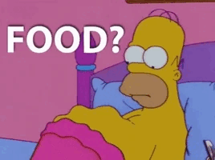
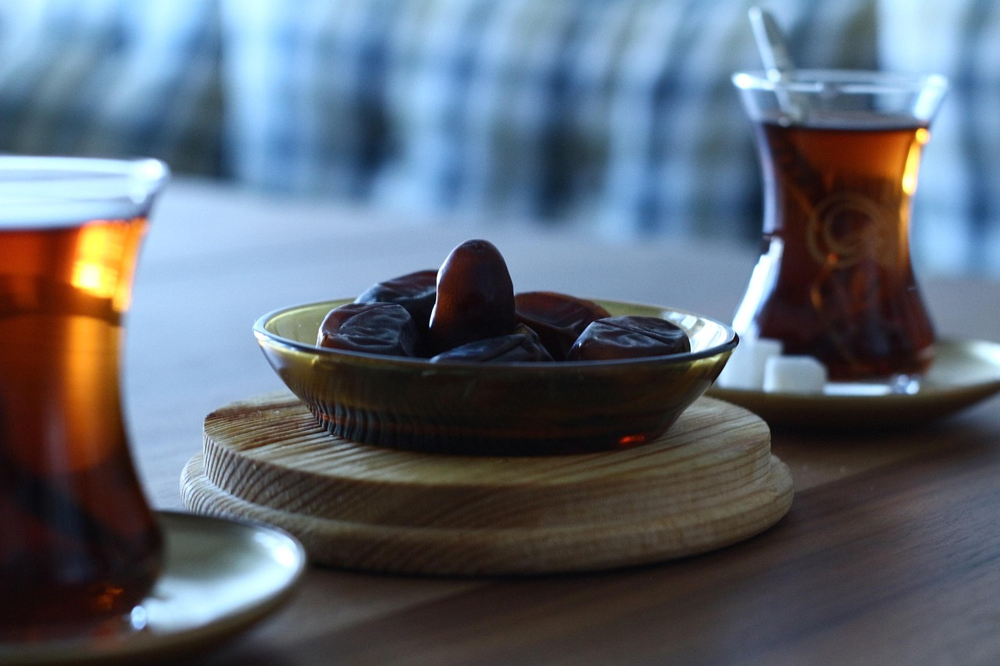

This is my First Multipage Website
The Hungry Man
This is a funny animated GIF file. I chose this file to describe how I was feeling at the moment. I was very hungry and didn't eat all day due to fasting. My stomach was making noises and this GIF described very well how I was feeling.
source: original image
Image of one of my Favorite Shows

Grey's Anatomy happens to be one of my favorite show and thats why I chose this image. I can binge watch it for hours and never get tired of watching it because it's not predictable. I first watched it in 2009 and fell in love with it. I used to watch it with my grandfather, that's why it means so much to me.
source: original image
Ramadan
I chose this image because we started our fasting March 1st, which marks the first day of Ramadan. Ramadan is very important to us because it's a sacred month of fasting, prayer, self-reflection, and devotion to God. We eat dates during Ramadan, especially to break our fast. This image describes thats perfectly.
source: original image